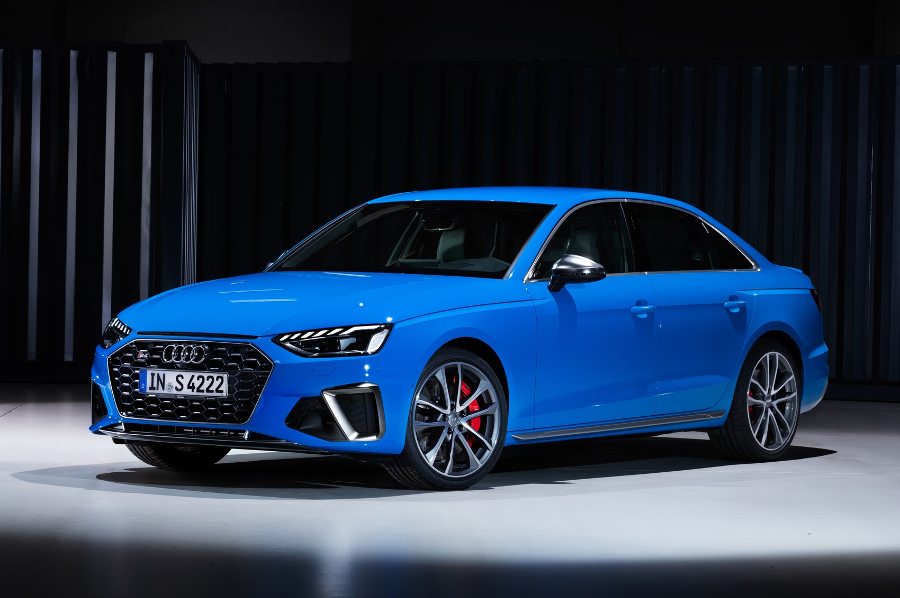
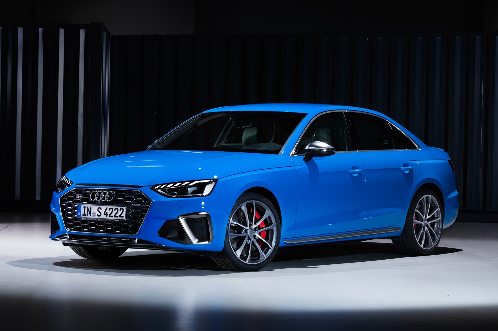

The Audi A4 is a line of compact executive cars produced since 1994 by the German car manufacturer Audi, a subsidiary of the Volkswagen Group.
The A4 has been built in five generations and is based on the Volkswagen Group B platform. The first generation A4 succeeded the Audi 80. The automaker's internal numbering treats the A4 as a continuation of the Audi 80 lineage, with the initial A4 designated as the B5-series, followed by the B6, B7, B8, and the B9. The B8 and B9 versions of the A4 are built on the Volkswagen Group MLB platform shared with many other Audi models and potentially one Porsche model within Volkswagen Group.
The Audi A4 automobile layout consists of a front-engine design, with transaxle-type transmissions mounted at the rear of the engine. The cars are front-wheel drive, or on some models, "quattro" all-wheel drive.
She had been an angel for coming up on 10 years and in all that time nobody had told her this was possible. The fact that it could ever happen never even entered her mind. Yet there she stood, with the undeniable evidence sitting on the ground before her. Angels could lose their wings. It went through such rapid contortions that the little bear was forced to change his hold on it so many times he became confused in the darkness, and could not, for the life of him, tell whether he held the sheep right side up, or upside down. But that point was decided for him a moment later by the animal itself, who, with a sudden twist, jabbed its horns so hard into his lowest ribs that he gave a grunt of anger and disgust.
She nervously peered over the edge. She understood in her mind that the view was supposed to be beautiful, but all she felt was fear. There had always been something about heights that disturbed her, and now she could feel the full force of this unease. She reluctantly crept a little closer with the encouragement of her friends as the fear continued to build. She couldn't help but feel that something horrible was about to happen. He heard the loud impact before he ever saw the result. It had been so loud that it had actually made him jump back in his seat. As soon as he recovered from the surprise, he saw the crack in the windshield. It seemed to be an analogy of the current condition of his life.